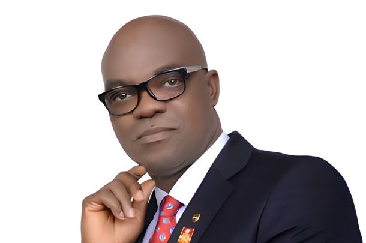
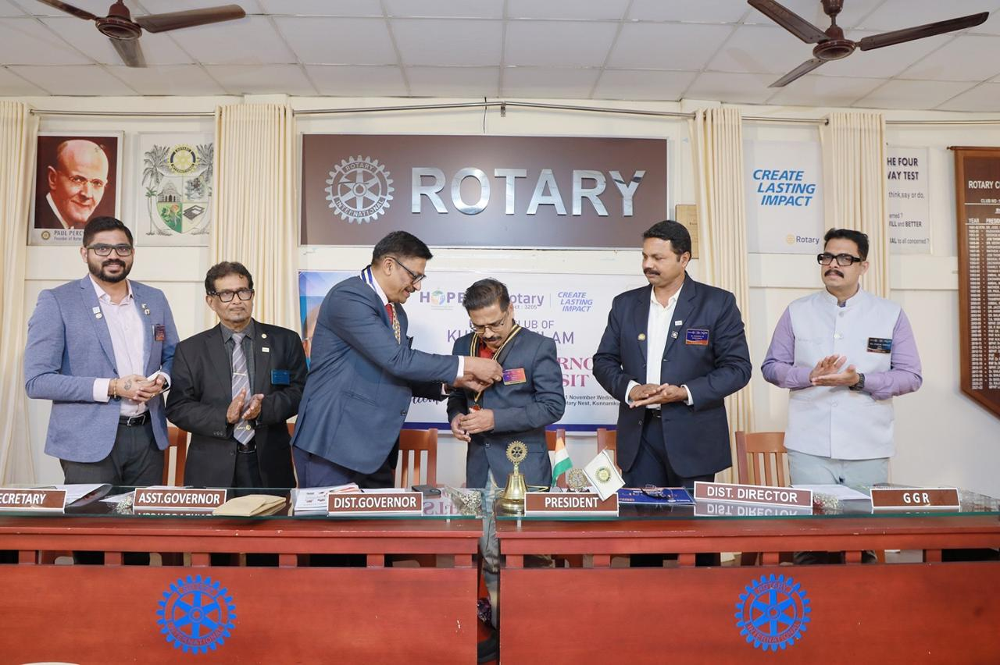
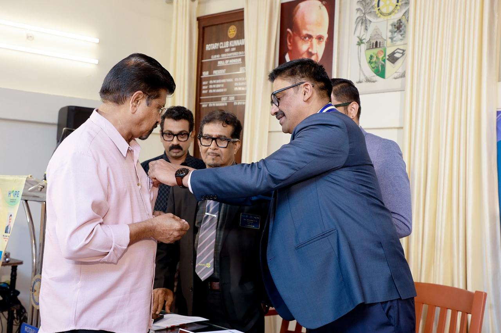
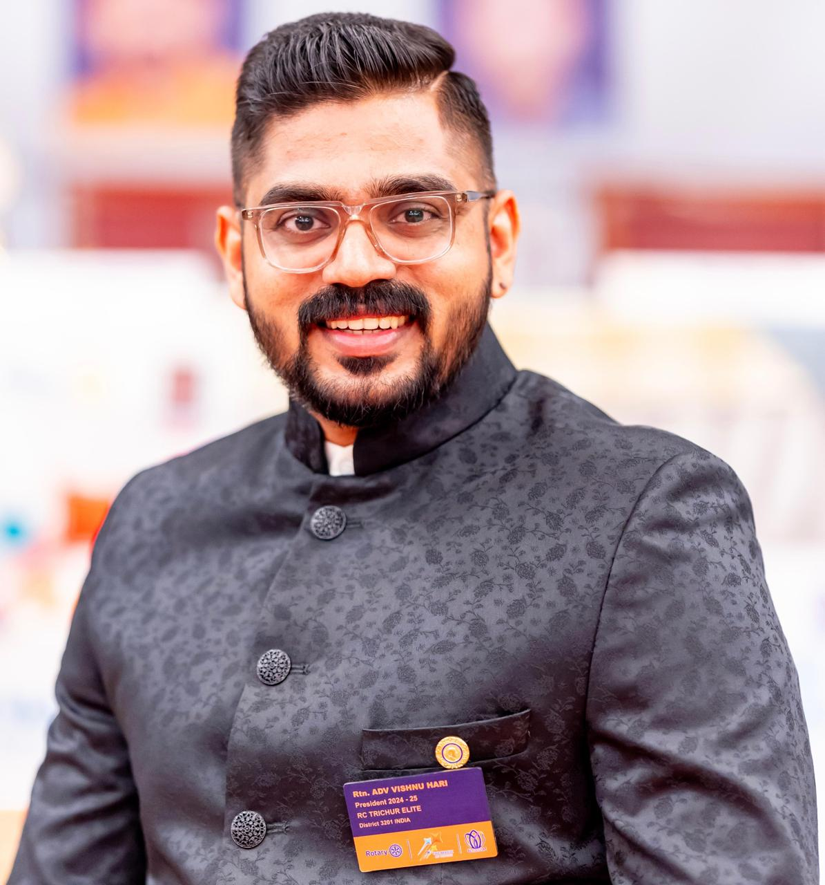
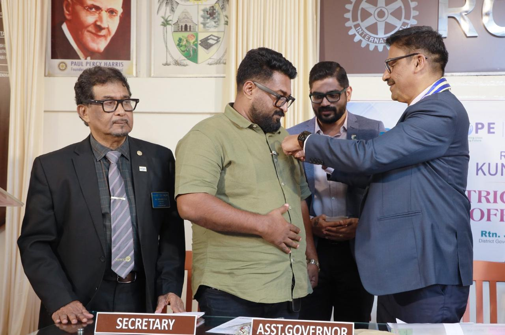
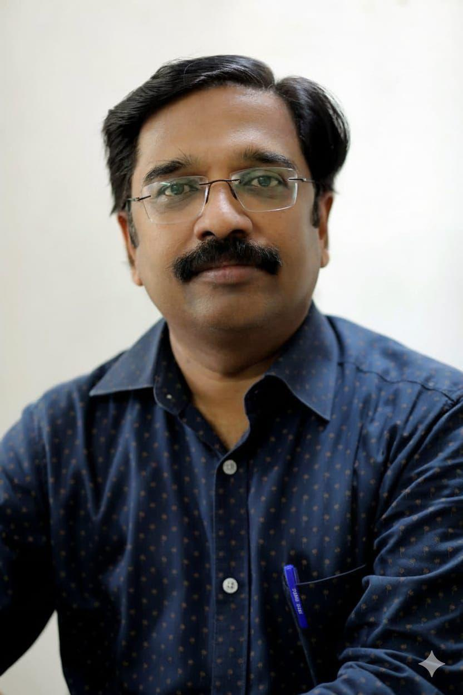
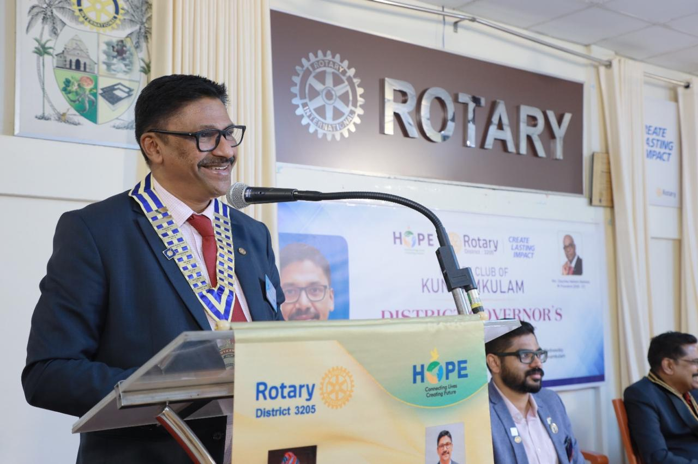
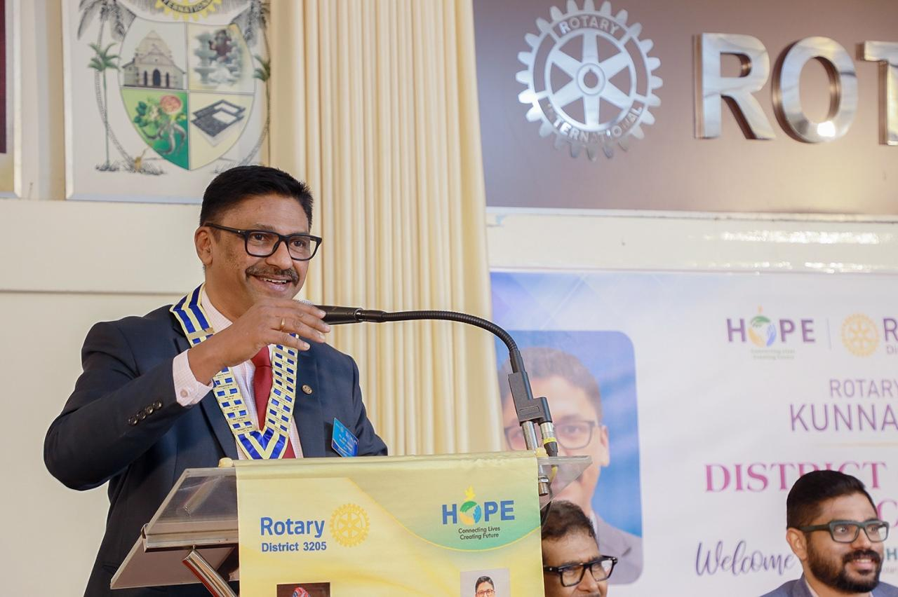
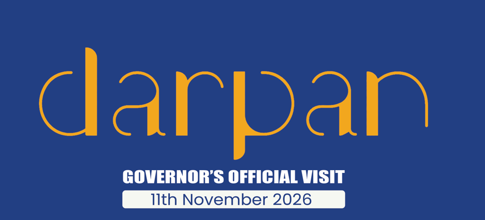

Rtn. Olayinka Hakkem Bavalola
RI President
Rotary Year 2026–27
our story Rotary Kunnamkulam
Kunnamkulam joined the Rotary world on 15th Feb 1980. The formal inauguration was done by PDG Rtn. Venugopal C. Govind. The Charter was presented by PDG Rtn. Varadaraj on 5th January 1981 with 23 charter members. Rtn. Dr. C. L. Jose and Rtn Dr. Pazhanimala were installed as the President and Secretary respectively. Since then, we are very active in Rotary world. We are doing lot of humanitarian projects for the benefit of our society. The programs conducted by our organisation are well appreciated and acknowledged.
Connect with our club →Meet the team guiding our club's service, administration and fellowship.

Rotary Year 2026–27

Rotary Year 2026–27

Rotary Year 2026–27

Rotary Year 2026–27

Rotary Year 2026–27

Rotary Year 2026–27

Rotary Year 2026–27

Rotary Year 2026–27
Each event has its own story.

Release of Darpan Presentation of a copy of Darpan by the Editor, Rtn Dr. Rajesh Krishnan, to District Governor Rtn Joshy Chako
Enquire about this initiative →Browse club publications and keep a copy for your records.
Download useful club reports and document.
Explore moments from service projects, meetings, celebrations and community programmes. Click any image to view it larger.
Want to know more about Rotary, attend a meeting or explore a community partnership? Get in touch.